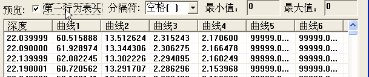

单孔柱状图业务逻辑
基础功能
生成单孔柱状图
- 地址数据库输入柱状图数据
- 选择数据库
- 选择钻孔名称
- 选择钻孔模版（自定义模版需要开发）
选择侧斜资料注记方式按度注记按度分秒注记
- 比例尺
- 地层注记类型
- 地层名称：
界系统组段 - 地层代码：
KzQQh - 地层注记开关
- 地层名称：
- 煤层注记类型
- 煤层名称
- 煤层代码
- 地层注记开关
- 标志层注记类型
- 煤层名称
- 煤层代码
- 地层注记开关
- 设置需要注记的标志层
- 煤层厚度注记方式
- 分层注记：单独记录夹矸厚度,用
（）表示
- 累加注记：

- 累加分层注记：

- 分层注记：单独记录夹矸厚度,用
- 测井柱状（控制绘制地层范围
- 只绘制煤层(其他岩性以无心状态表示)
- 全部绘制
- 分层注记
- 累加注记
- 柱状分割线
- 用于较薄的煤层美观展示
- 增加复选框，控制是否绘制
- 左右分割线设置水平还是倾斜


煤层距离不够，可以适当压缩同一煤层距离
分层注记设置
- 设置数值小数点位置：
默认2位 - 设置行高最小值：控制出图是文字大小超出边框范围

- 设置数值小数点位置：
岩性注记间距：内边距
- 顶底距离
- 两侧距离

柱状与文字部分对齐
- 选择
柱状与文字部分对齐，将岩性描述部分按比例分割
- 不选择
柱状与文字部分对齐,将等分岩性描述的高
- 选择
消耗量曲线连成折线
标志层列每一行都连线
- 每一层都连线或者只在标注的层才连线

- 每一层都连线或者只在标注的层才连线
同一煤层是采取率取平均值
- 含有夹矸的煤层，采取率自动取平均值。
同一煤层时采长求和
- 含有夹矸的煤层，采长自动求和。
岩性填充时，填充符号占满整个格子，不协调调整填充
- 勾选此项，填充符号会占满整个格子。

- 不勾选时，系统会保证填充符号的完整。

- 勾选此项，填充符号会占满整个格子。
反序绘制
- 当钻孔孔口在下时，根据实际情况绘制钻孔，累深为从大到小。
封孔按孔径绘制
- 参照孔径绘制钻孔封孔资料。
填充封孔
- 根据封孔材料自动填充封孔。
采用石油类型符号填充钻孔
- 采用石油类型符号填充钻孔岩性。
选择测井曲线
- 导入文件：
*.Dat*.fld - 设置数值上限额

- 导入文件：
- 对应曲线名称


- 对应曲线名称
查看测井曲线数据
查看测井曲线

- 选择曲线类型，显示所有对应数据
- 设置有效值开始和结束位置进行绘制
- 设置有效参数范围：
深度井径密度等 - 点击
查看->列出所有符合条件的数据 - 可以导出文本文件（单根曲线对应数值）
字段设置
*
增加修改字段的对应
- 曲线设置
- 如果存在测井曲线字段，则必须添加测井曲线文件
- 双击曲线修改
最大值最小值方向是否反向属性

- 缺省值
- 设置单孔柱状图缺省值
生成测井曲线
选择测井曲线数据文件
txt文件或者其他任意文件
选择数据格式
- 一般文本数据（如果原始数据被修改过）
- 表头+测井数据（如果被修改过且包含表头）
- 原始测井数据（常用）
输入比例尺
是否自动标注曲线最大值最小值(3.2版已经去掉)- 点击
自动域值自动剔除所选数据文件中的错误数值。 - 修改曲线的
标注名称颜色。 - 显示
最大值最小值
- 点击
设置文件是否有表头（可以不用设置，自动识别）
设置文本分隔符（可以不用设置，自动识别）
- 曲线设置

- 选择需要绘制的曲线
- 设置曲线样式:
实线虚线 - 绘制方式：
列表绘制重叠绘制 - 确定生成测井曲线
- 是否波幅取对数
- 是否标注对数值
- 是否标注最大值最小值
- 设置注记高度：
mm - 曲线宽度：
mm
生成测井综合成果图
扩展功能
测井曲线数据查看
- 查看坐标点详细信息
- 查看坐标点详细信息
柱状图缩短层间距
柱状图分幅
岩性代码对照表（由数据库接口维护）
- 没有对照的岩性柱状图将不予显示

- 没有对照的岩性柱状图将不予显示
丢弃功能
曲线标尺与位置
给定标尺宽度(由AUTO CAD完成)确定曲线位置（由AUTO CAD完成)
测井曲线数据导出至文本
测井曲线数据导出至数据库